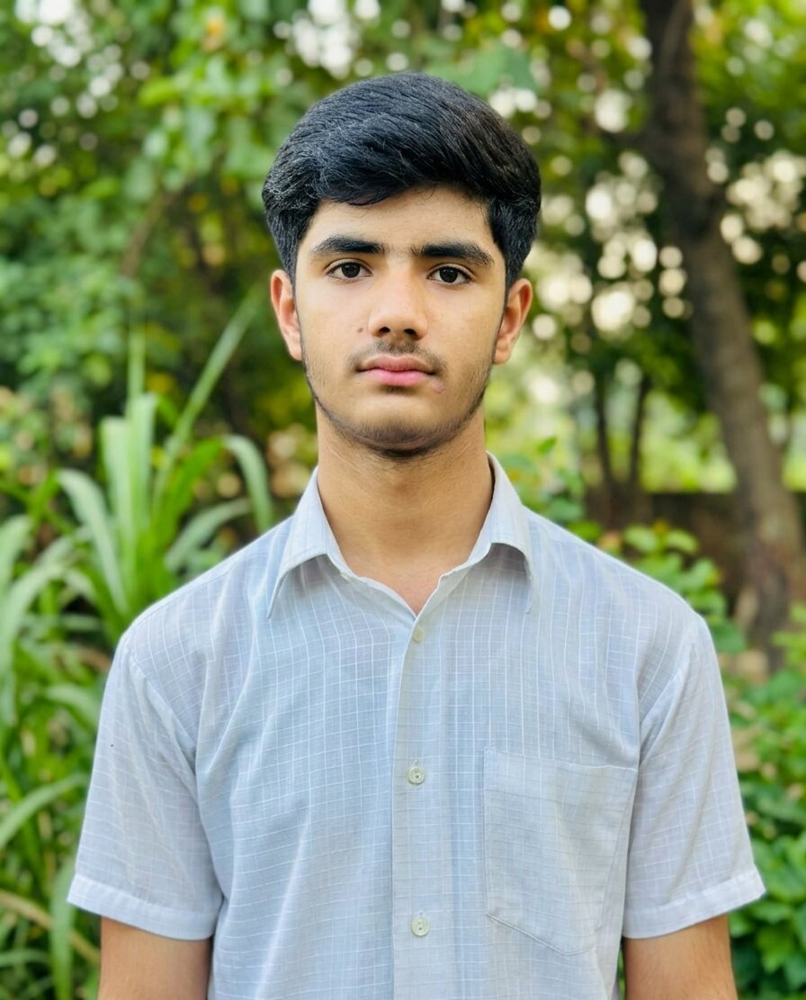

I am a 9th-grade student from Pakistan with a huge passion for technology and coding. Currently, I am focused on learning web development and building creative digital projects. I love exploring how things work behind the screen and am always eager to learn new tech skills.
I'm currently a 9th-grade student. Besides school, I'm also passionate about computer programming. Whenever I'm free, I learn HTML and try to create new web pages. My goal is to become a professional web developer.
I'm still learning, and my skills are:
Class: 9th Grade
My favourite subject is Computer Science.
If you would like to contact me, you can email me at:
Nice to meet you! Here is a little glimpse of me:

Ans: I've always been interested in computer games and websites, wondering how it all works. I didn't just want to deal with computers, I wanted to create something myself, so I started right away.
Ans: No, absolutely not! I'm very particular about time management. I do my school homework and test preparation first, and then learn coding in my spare time.
Ans: MI've learned HTML5 completely, so I can build any website structure. I'm currently learning CSS so I can give my websites nice colors and designs.
Ans:I use Visual Studio Code for coding because it is very fast and easy to code in.
Abhi meri learning stage hai, lekin apni basic knowledge ke sath main niche di gayi services behtareen tarike se provide kar sakta hoon: